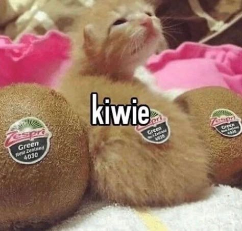

Hi, yes I know that is the Indonesian Language page but I will be speaking in English.
During our stay in Hualien, obviously we had a hotel. We also ate in many restaurants.
Which brings us to my Indonesian assignment, make a review text about a hotel or restaurant.
Lets do this 😝😝😝
Step 1
So the first thing we did was fill out a form about what object we wanted to review.
I chose the Lakeshore Hotel in Hualien because it was of the best quality compared to the other 2 hotels.
We had to find some crucial information about the object such as its location, hotline, website, rating, ect.
We also had to find information about its interior, exterior, facilities, etc.
That was it really for the first step 🤷 Also, this step was held before the edutrip, leading to the next step.
Step 2
The next step was to actually collect first-hand by actually being in the hotel/restaurant.
This is why I chose to review a hotel. Because if you review a restaurant, you'll have a very limited time to get information if you plan of eating.
If you're in a hotel, you have more time to observe and take notes of the hotel.
Anyway, we had to take photos of the facilities and just take notes of our opinions along the way.
Apparently we also had to interview a staff member but literally no one did that.
I took no photos! Because my phone died. I'm going to be honest, all the photos I used for the next step were from the hotel's website.
After that (within the same step), we had to brainstorm as to what our review would look like.
I didn't really do this because I thought it was kinda pointless but whatever I turned out fine.
That's all, NEXT!
Step 3
The third step was to make a draft using our notes and pictures.
We were guided through the paragraphs, starting with crucial informaton regarding our chosen object, then going onto describe all a tourist needs to know about the city we're in, then describing the hotel with its facilities, amount of hotel rooms, etc, then the positives and negatives, summary, recommendation, and advice.
It's a long list and we had specific bullet points to fulfill within each of these paragraphs.
For me, they weren't 1 paragraph each. 1 topic had around 5-10 subtopics and each of those subtopics got its own paragraph.
Can you imagine how long that must be? Well it is long, you don't have to imagine it.
When writing the description of the hotel itself, I took AGES. Not because I struggled but because I was putting in every last drop of information I could find about this hotel.
I literally spent 2 days finishing that section. 2 DAYS, AND I STILL HAD THE REST OF IT.
That wasn't even a skill issue, it was a skill OVERLOAD...
But I finished and sumbitted it on time, lets gooo!!
If you want to see the draft in question, use the link below! (btw if you're not using a Laurensia school account, you might not be able to enter...)
Menginap Dibawah Laut: Lakeshore Hotel, Hualien
Step 4,5,6
The next step would be to finalize our review of which we haven't done yet.
Then the 5th step would be to do some layout-ing into a pdf and to have our work checked by our teacher Bu Melani.
Then the 6th step would be to record ourselves reciting our own review 😨
That's the one I'm most worried for because not only am I HORRIBLE at memorizing these kinds of texts with so many details, its all in INDONESIAN... I'm so cooked 😂😂
Yeah but that's about it for this one :33
